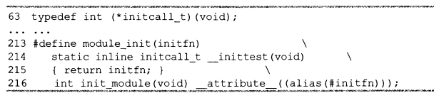

为了支持内核抢占所作的第一处变动就是每个进程的threadinfo引入了 preemptcount计数器。该计数器初始值为0，每当使用锁的时候数值加1，释放锁的时候数值减1。当数值为0的时候，内核就可执行抢占。从中断返回内核空间的时候，内核会检查flag和preemptcount的值。如果flag中TIFNEEDRESCHED被设置，并且preemptcount为0的话，这说明有一个更为重要的任务需要执行并且可以安全地抢占，此时，调度程序就会调度(抢占当前进程)。如果preemptcount不为0，说明当前 任务持有锁，所以抢占是不安全的。这时，就会像通常那样直接从中断返回当前执行进程。如果当前进程所持有的所有的锁都被释放了。那么preemptcount就会重新为0。此时，释放锁的代码会检查needresched是否被设置。如果是的话，就会调用调度程序。有些内核代码需要允许或禁止内核抢占。 如果内核中的进程被阻塞了，或它显式地调用了schedule()，内核抢占也会显式地发生。这种形式的内核代码从来都是受支持的，因为根本无需额外的逻辑来保证内核可以安全地发生被抢占。如果代码显式的调用了schedule()，那么它应该清楚自己是可以安全地被抢占的。 在2.6.26内核中，sysctl_init()没有在do_basic_setup()中北调用，而是变成了core_initcall(sysctl_init)，其本质上就是： 如果内核没有定义宏MODULE，则core_initcall()就是define_initcall(“1”,fn,1)，被直接链接进入内核； 如果内核定义了MODULE宏，则core_initcall()就是module_init()，转而：  所以对于可编译到内核与编译成模块的代码，如果编译到了内核，就会自动生成.initcall0.init这样的段，以及对应的initcall函数，根据数字的大小优先，在内核初始化的时候，在do_initcalls中被调用。如果是被编译成内核，那就需要在内核的启动脚本中，由用户态程序介入来主动加载。 printk打印的消息可以在/var/log/syslog中看到
很久以前current是一个全局变量，SMP时代有很多进程同时在运行，一个全局的current肯定是不够了，于是current变成了一个宏。本质上就是全局变量变成了一个PER_CPU的变量，通过宏来找到每个CPU上的经常究竟是哪个struct task
在arch/x86/kernel/vmlinux_64.lds.S中可见
PERCPU(4096)
PERCPU()是一个宏，定义在include/asm-generic/vmlinux.lds.h中，表示所有*.data.percpu形式的段都被链接在一起，起始位置是从__per_cpu_start到__per_cpu_end，这个区域在加载时会加载到内存的(.data.percpu-LOAD_OFFSET)位置，LOAD_OFFSET定义在文件arch/x86/kernel/vmlinux_64.lds.S中有定义：
#define LOAD_OFFSET __START_KERNEL_map
__START_KERNEL_map定义在include/asm-x86/page_64.h中：
#define __START_KERNLE_map AC(0xffffffff80000000)
为什么要这样做呢，我猜测：每个percpu的名字都是一样的，那么如何让这些同名的变量在一个程序中同时存在呢？就是编译时，这些变量都只有一份，放在__per_cpu_start到__per_cpu_end直接，内核初始化时将这部分数据copy到内存中，同时赋值CPU_NR份，然后要访问第i个CPU的var变量，只要找到第i个CPU对应的那段内存，然后根据var变量与编译期__per_cpu_start的偏移，就可以得到此变量在对应内存段中的偏移。
va_list is: void*
va_start(args, fmt) is:
args = (&fmt + INT_ALIGNED(sizeof(fmt)))
means args point to the first argument
va_end(args) is: void(0)
va_arg(args, T) is:
SIZE=INT_ALIGNED(sizeof(T))
*(T*) ( (args += SIZE) - SIZE )
means return T's value and move args point to next argument
copy to user和copy from user的实现？
select比epoll的优势？
struct socket的state状态转换？
我现在知道加载模块就是将struct module添加到kernel列表中，把obj文件copy到一个可执行的内存里，重定位其中代码的过程，那么内核符号表在哪里呢？